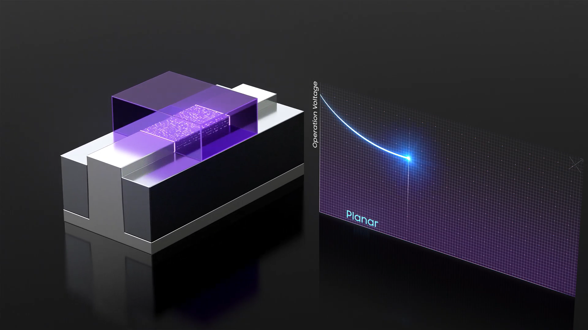

Evolution of transistor technology from point-contact transistors to modern metal-oxide-semiconductor field-effect transistors (MOSFETs) and beyond.
The invention of the point-contact transistor in 1947 marked the beginning of modern electronics, eventually leading to the Bipolar Junction Transistor (BJT). BJTs enabled the first wave of solid-state electronics, replacing bulky and fragile vacuum tubes.
The invention of the MOSFET was a major turning point. MOSFETs offered significantly lower power consumption and higher scalability compared to BJTs. The introduction of CMOS (Complementary MOS) technology further reduced static power consumption to near zero, paving the way for high-density integrated circuits and microprocessors.
As conventional planar MOSFETs faced severe limits in the early 2010s, the industry adopted 3D transistor architectures like FinFET (Fin Field-Effect Transistor). Today, we are transitioning to Gate-All-Around (GAA) nanosheet transistors to continue pushing the boundaries of performance and power efficiency in logic devices.